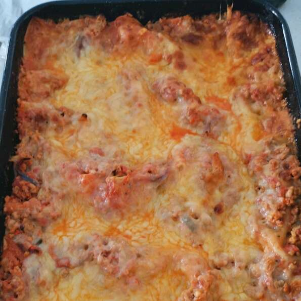

Lasagna

Description
This is my mom's special homemade lasagna recipe with made from scratch tomato sauce and delicious, cheesy filling. I have found none better anywhere. Serve with a leafy green salad and crusty garlic bread, if desired.
Images, recipe and description copied from allrecipes.com for educational purposes see All Recipes Homemade Lasagna
Ingredients
- 1 (16 oz) package of lasagna noodles
- 0.5 lb of ground pork
- 0.5 lb of ground beef
- 8 Oz Tomato Sauce
- 28 Oz Crushed Toamtoes
- 1 Clove garlic, crushed
- 0.5 teaspoon oregeno
- 0.5 cup minced onion
- 0.125 teaspoon white sugar
- 1.5 teaspoon dried basil
- 1.5 teaspoon salt
- 1 lb small curd cottage cheese
- 3 eggs
- 0.75 cup grate Parmesan cheese
- 2 teaspoons salt
- 0.25 teaspoon ground black pepper
- 1 lb shredded mozzarella cheese
Steps
- Preheat oven to 375 degrees F (190 degrees C). Bring a large pot of lightly salted water to a boil. Add noodles and cook for 8 to 10 minutes or until al dente; drain and set aside.
- Place pork and beef in a large, deep skillet. Cook over medium high heat until evenly brown. Stir in tomato sauce, crushed tomatoes, parsley, garlic, oregano, onion, sugar, basil and salt. Simmer over medium-low heat for 30 minutes, stirring occasionally.
- In a large bowl, combine cottage cheese, eggs, Parmesan cheese, parsley, salt and pepper.
- In a 9x13 inch baking dish, place 2 layers of noodles on the bottom of dish; layer 1/2 of the cheese mixture, 1/2 of the mozzarella cheese and 1/2 of the sauce; repeat layers.
- Cover with aluminum foil and bake in preheated oven for 30 to 40 minutes. Remove foil and bake for another 5 to 10 minutes; let stand for 10 minutes before cutting; serve.